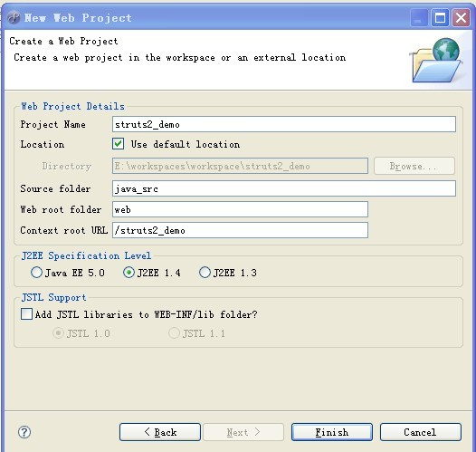
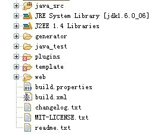
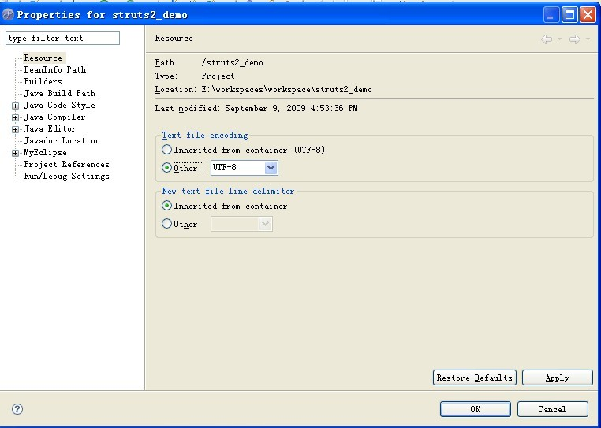
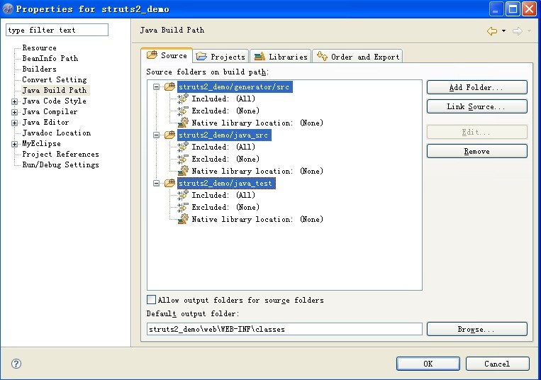
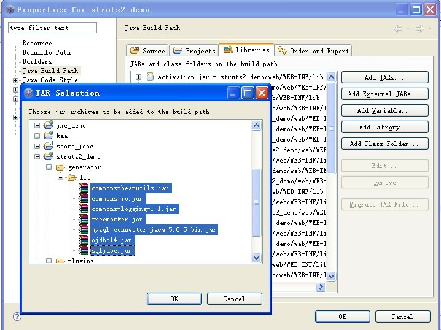
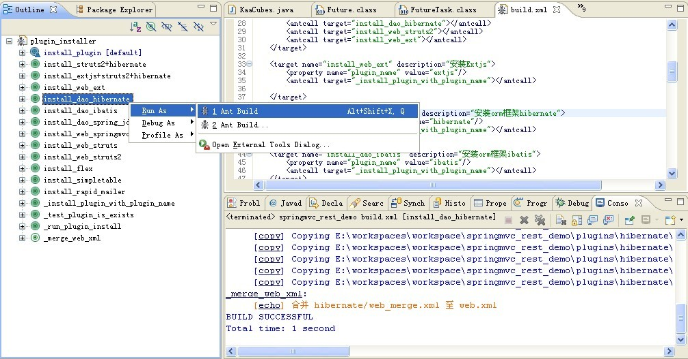
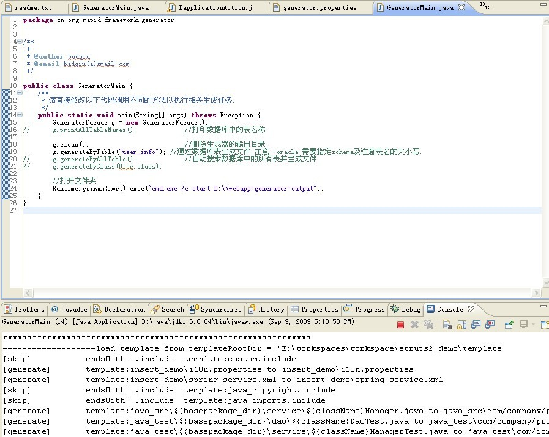
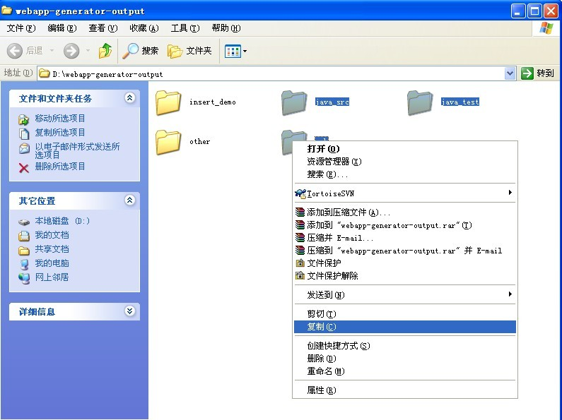

|
quick_start_guild
介绍¶以下将详细描述struts2+hibernate的项目搭建方法,其它的项目组合如(springmvc+iBatis,struts2+jdbc)可以参考如下步骤. 注意: 请使用firefox或是IE7阅读本wiki,IE6显示有问题 环境介绍¶
struts2+spring+hibernate详细搭建介绍¶1.创建一个 struts2_demo的 web project¶注意:Web root foler的值为web  2.拷贝rapid-framework至项目根目录¶将rapidframework.zip解压出来的内容全部拷贝至项目根目录,拷贝完效果如下.  3.设置项目的编码为utf-8¶右键点击项目,修改项目属性  4.设置源码路径¶ 5.将generator/lib的jars加入classpath¶点击"Add jars"按钮将生成器依赖的jar包需要加入classpath  注：如果使用Eclipse，需要将web/WEB-INF/lib下jars和Tomcat的servlet-api.jar加入。 6.安装插件 hibernate及struts2¶项目为插件结构,web框架及dao层需要安装(可以安装不同的web框架或是dao层) 打开plugins/build.xml,并打开eclipse的 Outline 视图 现运行 install_dao_hibernate 及 install_web_struts2 任务,请注意安装顺序  7.在mysql数据库中创建表user_info¶在test数据库创建表,运行如下sql CREATE TABLE user_info ( user_id bigint PRIMARY KEY AUTO_INCREMENT, username varchar(50) not null, password varchar(50), birth_date date, sex int, age int ) ENGINE=InnoDB DEFAULT CHARSET=utf8; 注：需要自行将数据库中插入相应的数据。 8.修改生成器配置文件generator.xml的jdbc数据库连接信息 其它属性暂不修改¶<entry key="jdbc.username">root</entry> <entry key="jdbc.password">123456</entry> <entry key="jdbc.url">jdbc:mysql://localhost:3306/test?useUnicode=true&characterEncoding=UTF-8</entry> <entry key="jdbc.driver">com.mysql.jdbc.Driver</entry> 9.运行代码生成器 GeneratorMain.java¶以application的方式运行cn.org.rapid_framework.generator.GeneratorMain,直接修改源码,在便生成不同的表.  10.拷贝生成的代码至项目根目录,并刷新项目¶生成器生成的文件默认会输出在d:/webapp-generator-output  注：缺省Hibernate生成代码为注解方式，可以手工选择other目录下生成的XML方式代码进行替换。 11.修改java_src/spring/applicationContext-datasource.xml的数据库连接信息¶该配置是应用需要连接的数据库,与生成器的数据库连接是分开配置的,与第8步的数据库连接配置相同即可 <bean id="dataSource" class="org.apache.commons.dbcp.BasicDataSource" destroy-method="close"> <property name="driverClassName" value="com.mysql.jdbc.Driver"/> <property name="url" value="jdbc:mysql://localhost:3306/test?useUnicode=true&characterEncoding=UTF-8"/> <property name="username" value="root"/> <property name="password" value="123456"/> </bean> 注：如果生成代码缺省包不是以com开头，需要修改spring下相关的XML文件。 12.部署应用struts2_demo至tomcatdao及web插件切换指南¶ |
► Sign in to add a comment
我用的是MyEclipse6?.0 ,我的web工程的webrootdir是WebRoot?而不是web。按照如上操作最后访问 http://localhost:8080/struts2_demo/pages/UserInfo/list.do时 firefox提示无法加载该页面。后台也没报错。UserInfoAction?中设置了断点也没进去，不知是什么原因？
创建项目时自己修改为web root dir为web啊，这个是可以修改的。
生成的项目部署的时候光将 java_src,java_test加入源代码路径 web 怎么处理 怎么没有写？
web目录是在第一步处理的
当然是代码生成器生成的，自己检查一下插件有没有安装吧。查看FAQ
为什么 要用Myeclipse？现在官网都上不去了！
你只要了解rapid的目录结构，也可以用其它开发工具啊，用MyEclipse?是由于笔者一直使用这个开发环境。 官网可以上，没有问题。
为什么我照着一步一步的做最后提示这个错误啊？谢谢，我刚学没多久：（ System Runtime Error: Unable to instantiate Action, com.company.project.action.UserInfoAction?, defined for 'UserInfo?/list' in namespace '/pages'com.company.project.action.UserInfoAction?
spring_jdbc+struts2 分页不好使用？ 不知是否我配置有错误!
spring_jdbc+springmvc 显示空白页
提问！ 我使用的iBatis作为Dao部分，仅仅添加这一个模块，生成Dao的时候继承了BaseIbatisDao?，但是始终没有找到这个类，这是什么原因?
请安装ibatis插件，其它相关疑问，请查看FAQs
BaseStruts2Action? BaseHibernateDao? 没有找到！是否能告知 刚开始看你的这个脚手架 想学习一下！
楼主，能不能把这个做成Eclipse插件呀感谢分享~`
我按照上面的步骤一步一步的做了，但是部署后启动jboss报错。 错误信息如下： org.springframework.beans.factory.BeanCreationException?: Error creating bean with name 'sessionFactory' defined in file D:\jboss-4.2.1.GA\server\default\deploy\struts_demo.war\WEB-INF\classes\spring\applicationContext-dao.xml?: Invocation of init method failed; nested exception is org.hibernate.AnnotationException?: java.lang.NoSuchMethodException?: org.hibernate.validator.ClassValidator?.<init>(java.lang.Class, java.util.ResourceBundle?, org.hibernate.validator.MessageInterpolator?, java.util.Map, org.hibernate.annotations.common.reflection.ReflectionManager?)
这个jboss部署问题你google一查一大把，不是框架的原因。 应该将jboss 4.2.1自带的hibernate jar删除掉。是那个导致不兼容。
谢谢。是hibernate-annotations.jar冲突。
因为不是对所有表操作 调用g.generateByTable("table_name");方法时 循环60个表时报错了，ORA-01000: maximum open cursors exceeded 处理超出打开游标的最大数异常
系统允许是300个
我怎么只生成4个文件夹:insert_demo, java_src, java_test, other,另外一个文件夹是什么呀,刚好图片被遮住了,看不到,还有怎么没有page这个文件夹的
very good,thanks
template\web目录下面没有模板导致没有生成jsp文件，哪里找模板文件？
找到原因了，没有引入springmvc导致web模板没有拷贝到位置。发现生成目录少的注意这个步骤不要落下
运行代码生成器 GeneratorMain?.java 时总是这个错误，不解 Exception in thread "main" java.lang.RuntimeException?: not found jdbc driver class:[com.mysql.jdbc.Driver ]
Caused by: java.lang.ClassNotFoundException?: com.mysql.jdbc.Driver{{{运行代码生成器 GeneratorMain?.java时总是这个错误，不解 Exception in thread "main" java.lang.RuntimeException?: not found jdbc driver class:[com.mysql.jdbc.Driver ]
Caused by: java.lang.ClassNotFoundException?: com.mysql.jdbc.Driver我日,这个框架太垃圾了.
照着上面的一样的还出错.
java.lang.ClassNotFoundException??: com.mysql.jdbc.Driver也解决不了的新手不建议使用本框架。
请问，generateByClass（）这个方法怎么用？ 我试用时，g.generateByTable()很好用，但试用generateByClass()时，开始找不到template/javaclass目录，后来我建了一个javaclass目录，也放了一些模板文件进去，可是还是不能生成？请提供帮助，谢谢！
原来的generateByClass()有一些bug,你可以自己参考generateByTable()修改代码,或是通过svn构建出来一个版本.
项目构建下载地址: http://code.google.com/p/rapid-framework/wiki/project_build
框架很好，而且很全面，有很多值得学习和借鉴的地方，按照WIKI上面的搭建SSH，一次就成功了，无任何问题，我下载的版本是rapid-framework-3.5.0.1
框架很好，搭建成功啦
你好 我用的是3.9.2.20100720 这个版本的 可是我生成后 类有错误，找不到BaseStruts2Action? 和BaseHibernateDao?这些类 我看需要的包我也都引进了 不知道为什么 ？
我用的是myecclipse6.5。。生成了src,test,some_demo,other,genenator这几个文件。。貌似没有Action这一层。。访问连接这不到页面。是什么原因？
貌似找到原因了，没有下载模板。。。
搞定。。哈哈。。。再开发个JSF+richface的吧
自己想写个类似的代码生成的东西， 没想到google下有这么好的，很好很强大， 一点建议：现在数据库注释可以生成jsp页面列名，我们以前采用对数据库注释comment标准化 用~分割的 [列名]~[注释]~[字典KEY] 呵呵， 如果有字典KEY形成一个下拉字典。呵呵 希望下一版能有类似的工能 最近在研究下
真是很好很强大，比起 Appfuse 更加适合国人口味，更加容易上手~ 强烈推荐。把苦力劳动工作给解放了~ 只需要关注自己的业务。对于bug大家应该多一些宽容，对于配置问题应该多找问题，仔细看看配置文档，别不能运行就骂人。应该抱着一颗感激的心去使用，感谢开发者辛勤的劳动。
我晕哟。。说我没有outRootDir 提示：Start Load GeneratorPropeties? from classpath:generator.xml, custom-generator.properties, custom-generator.xml? GeneratorPropeties? Load Success,files:
Replace? .? => /? on generator.properties, key=source_key+'dir', For example: pkg=com.company ==> pkg_dir=com/company
Exception in thread "main" java.lang.IllegalArgumentException?: outRootDir must be not null
还有啊。那个main的类 。提示没有main方法。。我悲剧